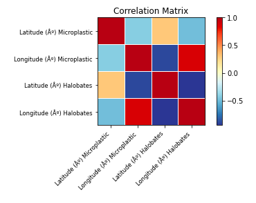

Resultados
Se observa una correlación baja 0.212692 entre la abundancia de microplásticos y halobates, así como baja correlación entre zooplankton y presencia de halobates de 0.212916, Por otro lado, hay una correlación negativa baja o inversa de -0.060144 entre zooplankton y microplásticos, esta correlación fue corroborada con un intervalo de confianza (Figura 1)
Las variables que esperamos tengan una correlación sin dependencia,
son Latitude (º) Microplastic/Latitude (º) Halobates con 0.302351,
por otro lado, Longitude (º) Microplastic y Longitude (º) Halobates
con 0.879943 con lo que se puede decir que se encuentran microsplásticos
cerca de la misma longitud donde existe la presencia de Halobates. (Figura 2)
NOTA: Para este análisis no utilizaremos la correlación entre
Latitude (º) Microplastic y Longitude (º) Microplastic,
Longitude (º) Halobates y Latitude (º) Halobates,
Latitude (º) Microplastic y Longitude (º) Halobates,
pues no esperamos que haya correlación entre estas variables.(fig.2)
El análisis exploratorio se realizó en un notebook de Jupyter y puede ser visualizado en el siguiente link Ver
.png "fig. 1")
Figura 1. Correlación abundancia microplásticos/zooplankton/Halobates
Figura 2. Correlación Lat/Log microplásticos y Lat/Log Halobates